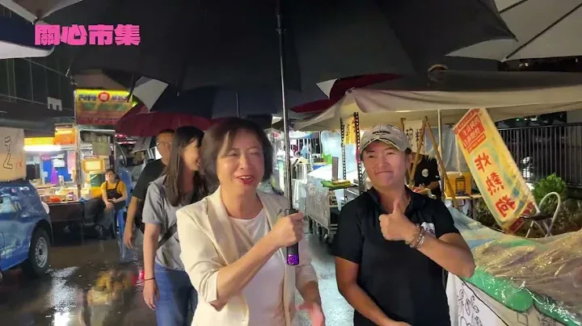

何欣純a_chun1973

@a_chun1973:捷運藍線進太平 全速推動！💪💪
Accounts
| 平台 | 帳號 | 已收錄貼文 | 最後更新 |
|---|---|---|---|
| 官網 | https://a-chun.tw/ | 10 | 2026-08-22 12:00 |
| https://www.facebook.com/94achun/ | 84 | 2026-08-23 14:34 | |
| https://www.instagram.com/a_chun1973/ | 49 | 2026-08-22 13:44 | |
| Threads | https://www.threads.com/@a_chun1973 | 90 | 2026-08-23 23:02 |
| YouTube | https://www.youtube.com/channel/UCFcDN6t7tJ7qObwtyBQHdRg | 100 | 2026-08-23 11:00 |
| LINE 官方帳號 | https://page.line.me/beu1231o | 0 | — |
Timeline
顯示 333 / 333 則
@a_chun1973:捷運藍線進太平 全速推動！💪💪

近來台中若不是連日高溫，就是下大雨，大家都需要更多舒適的室內運動休憩環境。 未來我們會盤點閒置空間，積極建置室內運動場館，讓市民享有一個不受天候影響、隨時可以運動休憩的好所在。
何欣純雨中掃水湳市場 民眾熱情喊「遇水則發」 距離市長選舉倒數 98 天，台中市長候選 […] 〈 何欣純雨中掃水湳市場 民眾熱情喊「遇水則發」 〉這篇文章最早發佈於《 何欣純官方網站｜2026 台中市長候選人 》。

15萬人口才能蓋運動中心？何欣純這樣才可以區域均衡
台中週末散策新玩法 何欣純推「欣好店家地圖」 台中市長候選人、立法委員何欣純今（21） […] 〈 台中週末散策新玩法 何欣純推「欣好店家地圖」 〉這篇文章最早發佈於《 何欣純官方網站｜2026 台中市長候選人 》。

@a_chun1973:等了8年，台中捷運藍線還沒看到實質動工。 捷運藍線遲遲沒動工，成本大增、追加預算、交通黑暗期......我們未來要面對的市政問題！

等了8年，台中捷運藍線還沒看到實質動工。 捷運藍線遲遲沒動工，成本大增、追加預算、交通黑暗期......我們未來要面對的市政問題！
倒數百日拚換新 何欣純「三個願意」拚台中「三個第一」 台中市長候選人、立法委員何欣純今表示，距 […] 〈 倒數百日拚換新 何欣純「三個願意」拚台中「三個第一」 〉這篇文章最早發佈於《 何欣純官方網站｜2026 台中市長候選人 》。
七夕快樂！！日常生活，每天真實，謝謝洗衣機、謝謝你！
七夕快樂！！ 日常生活，每天真實，謝謝洗衣機、謝謝你！

今早來到 #沙鹿市場，和大家見面聊聊天，感受最真實的市場人情味。 途中經過在地飲料店「果果青」，就停下來點了一杯招牌「蘋果青」🍎 走進市場、支持在地店家，每一次的交流與互動，都是我更認識台中，也爭取市民認同的機會。 選戰倒數97天，繼續一步一腳印，為台中打拼！
@a_chun1973:中秋將至，每一年、每位元首不分黨派都會向庇護工場及弱勢團體採購中秋禮盒，但今年總預算拖到8月底才三讀，又因為立法院表決全數刪凍3000萬元國務機要費，這些中秋禮盒訂單蒙受波及，讓人好急又生氣。 「孩子沒有做錯事」，台中包括十方、立達、瑪利亞等3家被刪單，因為總統府大單預算沒過，加上原物料上漲，營運非常困難。如果有機會的話，我想邀請大刀刪凍預算的委員，能到台中機構親眼看看孩子有多努力！ 一份禮盒，對庇護工場的孩子與弱勢朋友來說，是一份工作、一份收入，每片餅乾、每塊糕餅都靠雙手烘焙、值得尊敬。我們黨團也獻上棉薄之力、媒合企業團體，呼籲企業團體協助採購度難關。 政治人物可以攻防，政黨可以競爭，但庇護工場不應成為政治鬥爭的犧牲品。社會各界集資認購，終究只是補救，而非長遠制度。社會弱勢需要的，是穩定、可預期的支持，合理監督，但請維持住那條有溫度、負有社會責任的公益底線。

@a_chun1973:🌧️ 雨中掃水湳市場！遇水則發、一路發！ 今天一早來到水湳市場，雖然天空不時下起雨，但澆不熄大家的熱情！謝謝沿途攤商、鄉親朋友一句句「加油」，都讓我們台中隊更有力量💪 水湳市場串聯西屯、北屯、北區生活圈，不只是大家採買日常的地方，更承載著台中最熟悉的人情味。 選戰倒數98天 風雨無阻，繼續向前拚☔️💚

@a_chun1973:你知道什麼是「割稻仔飯」嗎？ 早期農夫家人會先在家裡準備好午餐，送到田邊讓大家一起享用，是台灣農村珍貴的生活文化。 透過「小小農夫大冒險」親子食農教育體驗，帶著孩子認識早期農村生活，也學習珍惜食物、土地與農民的辛勞。 孩子是城市的未來，希望他們從小認識土地、親近農村，在體驗中學會珍惜與感恩，讓珍貴的農村文化一代一代傳下去。

吃麵囉！！🍜 豐原好吃好玩，又有在地老牌好味道，麵條Q、湯頭讚、牛肉燉到軟嫩入味，就是牛肉麵的精華所在！ 滷味更是一絕，豆干、海帶、滷蛋、豬耳朵......在地巷仔內的好氣味，淋上獨門醬汁，蔥花配色提味，感恩滿足！❤❤ #豐原上楓牛肉麵🐂 #豐原區東湳里三豐路二段317號 謝志忠 幫您講話 蔡怡萱（蔡ㄟ）

等了8年，台中捷運藍線還沒看到實質動工。 捷運藍線遲遲沒動工，成本大增、追加預算、交通黑暗期......我們未來要面對的市政問題！

你知道什麼是 #割稻仔飯 嗎？ 早期農夫家人會先在家裡準備好午餐，送到田邊讓大家一起享用，是台灣農村珍貴的生活文化。 先前來到大里竹仔坑社區發展協會，舉辦「小小農夫大冒險」親子食農教育體驗，透過割稻仔飯與自製「荔枝乾」饅頭，帶著孩子認識早期農村生活，也學習珍惜食物、土地與農民的辛勞。 孩子是城市的下一代，希望他們從小認識土地、親近農村，在體驗中學會珍惜與感恩，讓這些珍貴的農村文化一代一代傳下去。

@a_chun1973:從政之初，我告訴自己要成為一位願意傾聽、願意帶頭打拚、願意站出來守護台中的政治工作者。 如今，這「三個願意」，要化為「三個第一」！ 1️⃣ 捷運路網效率第一 全力推進藍線、綠線延伸、藍線延伸太平、屯區紫線、紅線，橘線首任四年拚動工！ 2️⃣ 六星福利第一 💰 市長換欣・普發現金 盤點財政、首會期爭取追加預算，財政許可、議會支持就推動。 👵 長輩照護 老人健保補助延續；敬老卡不歸零、擴大通路，計程車單趟提高至200點；補助帶狀疱疹疫苗。 👶 育兒支持 生育補助加碼、坐月子每胎5萬、0～6歲每月1500元營養津貼、腸病毒疫苗補助；營養午餐「2380大升級」。 🧑💻 青年靠山 成立青年局，提供創業貸款利息、租金補貼，設置青創基地與共享空間。 3️⃣ 產業升級發展第一 爭取設置「無人機智慧製造中心」，整合研發、測試、資安、非紅供應鏈與人才培育，協助產業升級、接軌國際。 我有政策、有能力，更有決心，距離投票日還有100天，我會一步一步把對台中的承諾化為行動，集結每一份期待改變的力量。
七夕快樂！！ 日常生活，每天真實，謝謝洗衣機、謝謝你！
@a_chun1973:七夕，除了是傳說中的情人節，同時也是台灣傳統的「七娘媽生」。 在傳統信仰中，七娘媽守護孩子平安長大；而我們要做的，就是用政策打造更友善的生活環境，不僅讓孩子健康成長，我的六星福利政策主張：照顧每一位市民，從小到老。

從2380六星級到親子運動館 何欣純一次講給你聽

中秋將至，每一年、每位元首不分黨派都會向庇護工場及弱勢團體採購中秋禮盒，但今年總預算拖到8月底才三讀，又因為立法院表決全數刪凍3000萬元國務機要費，這些中秋禮盒訂單蒙受波及，讓人好急又生氣。 「孩子沒有做錯事」，台中包括十方、立達、瑪利亞等3家被刪單，因為總統府大單預算沒過，加上原物料上漲，營運非常困難。如果有機會的話，我想邀請大刀刪凍預算的委員，能到台中機構親眼看看孩子有多努力！ 一份禮盒，對庇護工場的孩子與弱勢朋友來說，是一份工作、一份收入，每片餅乾、每塊糕餅都靠雙手烘焙、值得尊敬。我們黨團也獻上棉薄之力、媒合企業團體，呼籲企業團體協助採購度難關。 政治人物可以攻防，政黨可以競爭，但庇護工場不應成為政治鬥爭的犧牲品。社會各界集資認購，終究只是補救，而非長遠制度。社會弱勢需要的，是穩定、可預期的支持，合理監督，但請維持住那條有溫度、負有社會責任的公益底線。

🌧️ 雨中掃水湳市場！遇水則發、一路發！ 今天一早來到水湳市場，雖然天空不時下起雨，但澆不熄大家的熱情！謝謝沿途攤商、鄉親朋友一句句「加油」，都讓我們台中隊更有力量💪 水湳市場串聯西屯、北屯、北區生活圈，不只是大家採買日常的地方，更承載著台中最熟悉的人情味。 選戰倒數98天 風雨無阻，繼續向前拚☔️💚

早期農夫家人會先在家裡準備好午餐，送到田邊讓大家一起享用，稱作「割稻仔飯 」，是台灣農村珍貴的生活文化。 參加「大里竹仔坑社區發展協會」所舉辦「小小農夫大冒險」親子食農教育體驗，帶著孩子認識早期農村生活，也學習珍惜食物、土地與農民的辛勞。 孩子是城市的下一代，希望他們從小認識土地、親近農村，在體驗中學會珍惜與感恩，讓這些珍貴的農村文化一代一代傳下去。

何欣純專訪-等了8年，台中捷運藍線還沒看到實質動工。捷運藍線遲遲沒動工，成本大增、追加預算、交通黑暗期......我們未來要面對的市政問題！

親子同樂超精彩！九天一出場 現場氣氛直接沸騰🔥

走進豐原，吃進豐原！😁😁 既在地、又創意！日式煎餃襯著薄脆冰花，煎得漂亮酥脆、好功夫，內餡新鮮飽滿，一口一口卡滋卡滋，推推👍👍 #主餃食光日式脆皮煎餃館 🥟🥟 #豐原區圓環南路37號 ❤❤ 謝志忠 幫您講話

投票倒數100天，何欣純宣誓要拚出台中「三個第一」！ 一年前，我告訴大家，我是願意傾聽、願意帶頭打拚、願意站出來守護台中的候選人。 如今，這「三個願意」，要化為真正的行動！ 1️⃣ #捷運路網效率第一 全力推進捷運藍線、綠線延伸大坑彰化、藍線延伸太平、屯區紫線、紅線；捷運橘線力拼首任4年內動工！ 2️⃣ #六星福利第一 ▪️市長換欣 普發現金 上任後將立即盤點市府財政，爭取在市議會第一會期提出追加預算，在財政許可及議會支持下推動台中普發現金 ▪️長輩照護 持續補助老人健保費 敬老卡擴大使用範圍，每月不歸零，計程車單趟點數提高到200點，農漁會、超商、超市、藥局也可使用 帶狀皰疹疫苗補助 ▪️育兒支持 坐月子補助每胎五萬 生育補助加碼加倍 幼兒腸病毒疫苗補助 0至6歲每月1500元營養津貼 營養午餐「2380大升級」：每週2次鮮乳、每週3次新鮮水果、每餐餐標提高至80元 ▪️青年靠山 成立青年局，整合青年政策資源 提供青年創業貸款利息及租金補貼 設置青創基地與共享空間 3️⃣#產業升級發展第一 爭取中央在台中設置「無人機智慧製造中心」，整合研發、測試場域、資安驗證、非紅供應鏈、國際認證與人才培育，協助傳統產業及中小微企業轉型升級、接軌國際供應鏈。 我有政策、有能力，更有決心，接下來100天，我會一步一步把對台中的承諾化為行動，集結每一份期待改變的力量。 11月28日，一起讓台中有一個真正向前走的新開始！ #心存大台中 #市長換欣_台中創新
@a_chun1973:七夕快樂！！ 日常生活，每天真實，謝謝洗衣機、謝謝你！
今天是 #七夕，傳說中的情人節 ！ 不論今天和誰一起度過，希望大家能珍惜身邊重要的人，每天都幸福而開心喔❤️